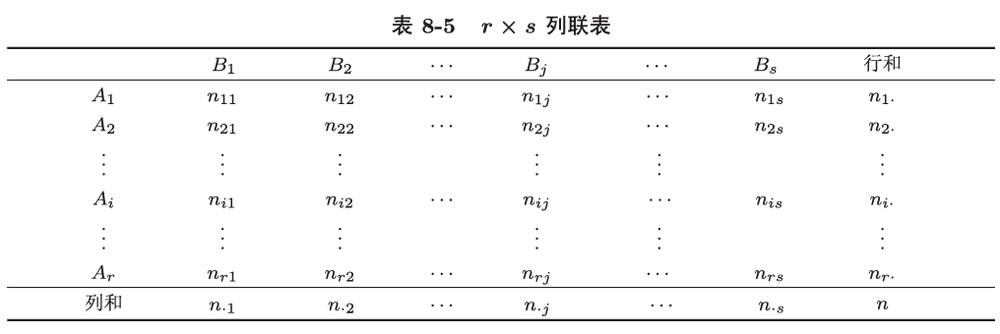

Ch.8 假设检验
假设检验就是对总体的某些位置特征提出假设，并利用样本信息来推断该假设的正确性。
基本概念
假设一般是某个量的取值或者分布。
如果检验的假设只涉及总体分布中的未知参数，则称这种假设为参数检验假设，反之则称为非参数检验假设。
我们以针对单个参数的参数检验假设为例子，比如有这样一个假设：总体样本的均值 \(\mu=0\)，那么这个假设称为原假设或零假设，通常记作 \(H_0\)，与之对立的 \(\mu\ne 0\) 称为备择假设或对立假设，通常记作 \(H_1\)。
对于原假设与对立假设各居一边的检验问题，比如说 \(H_0:p\le 0.05,H_1:p>0.05\)，称其为单边检验。对于对立假设分局原假设的两边的检验问题，比如说 \(H_0:\mu=0,H_1:\mu\ne 0\)，称其为双边检验。
如果假设中只含有一个假设，则称其为简单假设；否则称为复杂假设。
假设检验的步骤
- 根据问题提出原假设 \(H_0\) 和对立假设 \(H_1\).
- 构造一个合适的统计量 \(U\)，往往由参数估计二濑，称为检验统计量，并在 \(H_0\) 成立的条件下推导出该统计量的分布。
- 给定一个小概率 \(\alpha\)，确定 \(U\) 的概率关于概率 \(\alpha\) 的界限，称为临界值，以及 \(U\) 不满足 \(H_0\) 假设的取值集合，称为拒绝域 \(W\). 拒绝域的补集称为接受域。
- 由样本算出统计量的观察值，若落在拒绝域，则拒绝 \(H_0\)；若落在接受域，则接受 \(H_0\).
假设检验的两类错误
第一类错误（弃真错误）：原假设 \(H_0\) 正确，但由于统计量的值落在拒绝域而拒绝了原假设 \(H_0\).
第二类错误（存伪错误）：原假设 \(H_0\) 不正确，但由于统计量的值落在接受域而接受了原假设 \(H_0\).
显然，第一类错误的概率就是假设检验中的小概率 \(\alpha\)：\(\mathrm{Pr}(拒绝\,H_0|H_0\,为真)=\mathrm{Pr}(U\in W|H_0\,为真)=\alpha\). 因此，有时会称 \(\alpha\) 为显著性水平。第二类错误的概率 \(\beta\) 一般计算比较困难：\(\mathrm{Pr}(接受\,H_0|H_1\, 为真)=\mathrm{Pr}(U\notin W|H_1\,为真)=\beta\).
在进行假设检验时，当然希望两类错误的概率越小越好，然而，在给定样本容量的情况下，犯两类错误的概率不可能同时减小：减少其中一个，另一个会增大。因此，Neyman 和 Pearson 提出了 Neyman-Pearson 原则：在控制 \(\alpha\) 的情况下，使 \(\beta\) 尽量小。
p 值检验法
对于假设检验 \(H_0:\theta\in\Theta_0;H_1:\theta\in\Theta_1\)，检验统计量为 \(T=T(X_1,\cdots,X_n)\)，拒绝域 \(W=\{|T|\ge \lambda\}\). 设 \(x_1,\cdots,x_n\) 为样本观察值，检验统计量 \(T\) 的观察值为 \(t=T(x_1,\cdots, x_n)\)，则定义 p 值如下： $$ p(x_1,\cdots,x_n)=\sup_{\theta\in\Theta_0}\mathrm{Pr}_\theta(|T|\ge |t|) $$ 换句话说 p 值是基于样本观察值而计算出的拒绝原假设的概率，当原假设为复合假设时，取最大概率。由于 p 值依赖于样本观察值，故而其也是一个统计量。
p 值越小，越应该拒绝原假设。Fisher 称 p 值为「反对原假设依据的强度」，当 p 值小于显著性水平 \(\alpha\) 时，我们拒绝原假设，否则接受原假设。有了 p 值，我们可以不再将检验陷入接受/拒绝的二元情形，而是量化成 p 值这个指标和 \(\alpha\) 进行比较，从而知道接受或拒绝原假设的「程度」。
正态总体均值的假设检验
一、单个正态总体均值的假设检验
设给定显著性水平 \(\alpha\)，\(X_1,\cdots,X_n\) 为来自总体 \(X\sim N(\mu,\sigma^2)\) 的一组样本，检验问题为：\(H_0:\mu=\mu_0;H_1:\mu\ne \mu_0\)，分以下两种情况：
(1)\(\sigma^2\) 已知，此时使用 \(u\) 检验。
检验统计量为 \(U=\dfrac{\bar{X}-\mu_0}{\sigma/\sqrt{n}}\)，在 \(H_0\) 成立时，我们有 \(U\sim N(0,1)\)，由此得知拒绝域： $$ W={|U|\ge u_{\alpha/2}} $$ 这种检验方法称为 \(u\) 检验法，只因 \(\dfrac{\bar{X}-\mu_0}{\sigma/\sqrt{n}}\) 习惯记为 \(U\) 而称为 \(U\) 统计量。
其他变体情形：
- 对于单边检验 \(H_0:\mu=\mu_0;H_1:\mu>\mu_0\)，利用 \(U\) 统计量得到拒绝域 \(W=\{U\ge u_\alpha\}\)；
- 对于单边检验 \(H_0:\mu=\mu_0;H_1:\mu<\mu_0\)，利用 \(U\) 统计量得到拒绝域 \(W=\{U\le -u_\alpha\}\).
- 对于单边检验 \(H_0:\mu\le \mu_0;H_1:\mu>\mu_0\)，仍取 \(U\) 统计量为检验统计量，但这个检验的原假设为复合假设，从而我们不能认为在原假设 \(H_0\) 成立的情况下，\(U\sim N(0,1)\)，但显然取 \(W'=\{U\ge u_\alpha\}\) 时，我们因 \(\mu=\mu_0\) 时第一类错误概率恰为 \(\alpha\)，\(\mu<\mu_0\) 时第一类错误概率小于 \(\alpha\)，故取拒绝域 \(W=W'\) 时，第一类错误概率不大于 \(\alpha\) 也可以。
- 对于单边检验 \(H_0:\mu\ge \mu_0;H_1:\mu<\mu_0\)，同 3.
显然，在检验统计量分布对称的情形下，单边检验的拒绝域可以由双边检验的拒绝域稍作变形得到。
(2) \(\sigma^2\) 未知，此时使用 \(t\) 检验。
使用样本标准差 \(S=\sqrt{\dfrac{1}{n-1}\sum_{i=1}^{n}(X_i-\bar{X})^2}\) 代替 \(\sigma\)，也就是取检验统计量 \(T=\dfrac{\bar{X}-\mu_0}{S/\sqrt{n}}\)，由之前章节的结论，在 \(H_0\) 成立的情况下，有 \(T\sim t(n-1)\)，于是检验的拒绝域为 $$ W={|T|\ge t_{\alpha/2}(n-1)} $$ 这种检验方法称为 \(t\) 检验法，只因 \(T=\dfrac{\bar{X}-\mu_0}{S/\sqrt{n}}\) 习惯记为 \(T\) 而称为 \(T\) 统计量。
二、两个正态总体的均值差的假设检验
设 \(X_1,\cdots,X_{n_1}\) 是来自正态总体 \(N(\mu_1,\sigma_1^2)\) 的一个样本，\(Y_1,\cdots,Y_{n_2}\) 是来自正态总体 \(N(\mu_2,\sigma_2^2)\) 的一个样本，且两样本相互独立，记 \(\bar{X},\bar{Y}\) 分别为其样本均值，\(S_1^2,S_2^2\) 分别为其样本方差，检验问题为：\(H_0:\mu_1=\mu_2;H_1:\mu_1\ne \mu_2\).
(1) \(\sigma_1^2\) 和 \(\sigma_2^2\) 均已知。
取检验统计量 \(U=\dfrac{\bar{X}-\bar{Y}}{\sqrt{\frac{\sigma_1^2}{n_1}+\frac{\sigma_2^2}{n_2}}}\)，当 \(H_0\) 成立时 \(U\sim N(0,1)\)，此时 \(|U|\) 不会太大，在给定显著性水平 \(\alpha\) 下，拒绝域 \(W=\{|U|\ge u_{\alpha/2}\}\).
(2) \(\sigma_1^2,\sigma_2^2\) 均未知但相等。
取检验统计量 \(T=\sqrt{\dfrac{n_1n_2(n_1+n_2-2)}{n_1+n_2}}\dfrac{\bar{X}-\bar{Y}}{\sqrt{(n_1-1)S_1^2+(n_2-1)S_2^2}}\)，当 \(H_0\) 成立时 \(T\sim t(n_1+n_2-2)\)，在给定显著性水平，此时 \(T\) 在零附近，在给定显著性水平 \(\alpha\) 下，拒绝域 \(W=\{|T|\ge t_{\alpha/2}(n_1+n_2-2)\}\).
三、基于成对数据的假设检验
对于两个正态总体的样本来自同一个总体的重复测量，比如说样本 \((X_1,Y_1),\cdots,(X_n,Y_n)\)，现记 \(Z_i=X_i-Y_i\)，且假定 \(Z_i\sim N(\mu,\sigma^2)\) 且 \(Z_i\) 相互独立，检验问题为：\(H_0:\mu=0;H_1:\mu\ne 0\).
使用 \(t\) 检验法，此时称为成对 \(t\) 检验法：取 \(T=\dfrac{\bar{Z}}{S_Z/\sqrt{n}}\)，其中 \(\bar{Z}=\dfrac{1}{n}\sum_{i=1}^{n}Z_i,S_Z^2=\dfrac{1}{n-1}\sum_{i=1}^{n}(Z_i-\bar{Z})^2\)，拒绝域为 \(W=\{|T|\ge t_{\alpha/2}(n-1)\}\).
正态总体方差的假设检验
一、单个正态总体方差的假设检验
设给定显著性水平 \(\alpha\)，设 \(X_1,\cdots,X_n\) 为来自总体 \(X\sim N(\mu,\sigma^2)\) 的一组样本，检验问题为 \(H_0:\sigma^2=\sigma_0^2;H_1:\sigma^2\ne \sigma_0^2\)，在假定 \(\mu\) 未知时，取检验统计量 \(\chi^2=\dfrac{(n-1)S^2}{\sigma_0^2}\)，由之前章节的结论：在 \(H_0\) 成立时有 \(\chi^2\sim \chi^2(n-1)\)，此时 \(\chi^2\) 不过大或过小，于是拒绝域： $$ W={\chi^2\le \chi^2_{1-\alpha/2}(n-1)}\cup{\chi^2\ge \chi^2_{\alpha/2}(n-1)} $$ 此检验称为 \(\chi^2\) 检验法，理由同上节。
二、两个正态总体的方差比的假设检验
设 \(X_1,\cdots, X_{n_1}\) 是来自正态总体 \(N(\mu_1,\sigma_1^2)\) 的一个样本，\(Y_1,\cdots,Y_{n_2}\) 是来自正态总体 \(N(\mu_2,\sigma_2^2)\) 的一个样本，两样本相互独立，检验问题为 \(H_0:\sigma_1^2=\sigma_2^2;H_1:\sigma_1^2\ne \sigma_2^2\)，且假定均值 \(\mu_1,\mu_2\) 均未知。
取检验统计量 \(F=\dfrac{S_1^2\sigma_2^2}{S_2^2\sigma_1^2}\). 在 \(H_0\) 成立时，由之前z航姐的结论：\(F\sim F(n_1-1,n_2-1)\)，在给定显著性水平 \(\alpha\) 下，拒绝域： $$ W={F\le F_{1-\alpha/2}(n_1-1,n_2-1)}\cup{F\ge F_{\alpha/2}(n_1-1,n_2-1)} $$ 此检验称为 \(F\) 检验法，理由同上节。
拟合优度检验
在实际问题中，我们常常不知道总体的分布类型（而和前文已知总体服从正态分布不同），这就需要对总体的分布类型进行推断，这种检验称为分布拟合优度检验，一般地，假设如下：\(H_0:F(x)=F_0(x;\theta)\)，其中 \(F_0\) 为某个已知的分布函数，\(\theta=(\theta_1,\cdots ,\theta_r)^{\mathsf{T}}\) 为未知参数。
下面我们介绍 Pearson \(\chi^2\) 拟合优度检验，基本思想是利用事件频率和概率之间的偏差构造检验统计量。
对于离散型随机变量的分布，设 \(H_0:P(X=x_i)=p_i,i=1,\cdots,k\)，其中 \(p_i\) 均已知，且 \(p_i\ge0,\sum_{i=1}^{n}p_i=1\)，\(X_1,\cdots,X_n\) 是一组样本，下面是检验步骤：
-
计算 \((X_1,\cdots,X_n)\) 中取 \(x_i\) 的实际频数 \(n_i,i=1,\cdots,k\)，即： $$ n_i=\sum_{i=1}^n[X_i=x_i] $$
-
计算实际频数与理论频数的偏差平方和 $$ \chi^2=\sum_{i=1}^{k}\dfrac{(n_i-np_i)^2}{np_i} $$ 该统计量称为 Pearson \(\chi^2\) 统计量，其度量了实际数据与理论分布的拟合程度，\(\chi^2\) 越大，拟合程度越差，可以证明，当 \(H_0\) 成立时，\(\chi^2\) 统计量的渐进分布为 \(\chi^2(k-1)\).
-
在给定显著性水平 \(\alpha\) 下，拒绝域为： $$ W={\chi^2\ge \chi^2_\alpha(k-1)} $$
原理类似，我们给出一般的假设检验问题：
-
将样本空间分为 \(k\) 个互不相交的事件 \(A_1,\cdots,A_k\).
-
计算样本 \((X_1,\cdots, X_n)\) 落在事件 \(A_i\) 的实际频数 \(n_i,i=1,2,\cdots,k\).
-
计算每个事件 \(A_i\) 上的理论频数：若参数 \(\theta\) 未知，则现算出 \(\theta\) 的最大似然估计 \(\hat{\theta}\)，然后计算理论频数 \(n\hat{p_i}\)，其中 \(\hat{p_i}=\mathrm{Pr}(X\in A_i|\theta=\hat{\theta})\).
-
计算实际频数与理论频数的偏差平方和： $$ \chi^2=\sum_{i=1}^{k}\dfrac{(n_i-n\hat{p_i})^2}{n\hat{p_i}} $$
-
在 \(H_0\) 为真时，Pearson-Fisher 定理给出结论：\(\chi^2\sim \chi^2(k-r-1)\).
-
于是在给定显著性水平 \(\alpha\) 下，拒绝域如下： $$ W={\chi^2\ge \chi^2_\alpha(k-r-1)} $$
此处 \(r\) 为独立未知参数的数量。
独立性检验
设 \((X_1,Y_1),\cdots,(X_n,Y_n)\) 为二维总体 \((X,Y)\) 的一个样本，\(H_0: X\,与\, Y\, 独立\). 我们将 \(X\) 与 \(Y\) 的取值范围分成 \(r\) 个与 \(s\) 个互不相交的区间 \(A_1,\cdots,A_r\) 和 \(B_1,\cdots,B_s\)，用 \(n_{ij}\) 表示指标 \(X\) 落在 \(A_i\)，\(Y\) 落在 \(B_j\) 的样本点的个数，又记 \(n_{i\bullet}=\sum_{j=1}^s n_{ij},n_{\bullet j}=\sum_{i=1}^{r}n_{ij}\).，由此绘制一张 \(r\times s\) 列联表：

记 \(p_{ij}=\mathrm{Pr}(X\in A_i,Y\in B_k),p_{i\bullet}=\mathrm{Pr}(X\in A_i),p_{\bullet j}=\mathrm{Pr}(Y\in B_j)\)，从而零假设 \(H_0\) 等价为这个零假设：\(H_0:p_{ij}=p_{i\bullet} p_{\bullet j}\)，该假设中含有 \(r+s\) 个未知参数，但因 \(\sum_{i=1}^{r}p_{i\bullet}=\sum_{j=1}^{s}p_{\bullet j}=1\)，故而仅有 \(r+s-2\) 个独立的未知参数，下面使用 \(\chi^2\) 检验法：
当零假设成立时，似然函数为： $$ L=\prod_{i=1}^{r}\prod_{j=1}^sp_{ij}^{n_{ij}}=\left(\prod_{i=1}^{r-1}p_{i\bullet}^{n_{i\bullet}}\right)\left(1-\sum_{i=1}^{r-1}p_{i\bullet}\right)^{n_{r\bullet}}\left(\prod_{j=1}^{s-1}p_{\bullet j}^{n_{\bullet j}}\right)\left(1-\sum_{j=1}^{s-1}p_{\bullet j}\right)^{n_{\bullet s}} $$ 对数似然为： $$ \ln L=\sum_{i=1}^{r-1}n_{i\bullet}\ln p_{i\bullet}+n_{r\bullet}\ln\left(1-\sum_{i=1}^{r-1}p_{i\bullet}\right)+\sum_{j=1}^{s-1}n_{\bullet j}\ln p_{\bullet j}+n_{\bullet s}\ln\left(1-\sum_{j=1}^{s-1}p_{\bullet j}\right)+ $$ 解似然方程组： $$ \dfrac{\partial \ln L}{\partial p_{i\bullet}}=\dfrac{n_{i\bullet}}{p_{i\bullet}}+\dfrac{-n_{r\bullet}}{1-\sum_{i=1}^{r-1} p_{i\bullet}}=0\ \dfrac{\partial \ln L}{\partial p_{\bullet j}}=\dfrac{n_{\bullet j}}{p_{\bullet j}}+\dfrac{-n_{\bullet s}}{1-\sum_{j=1}^{s-1} p_{\bullet j}}=0 $$ 从而得到： $$ \hat{p_{i\bullet}}=\dfrac{n_{i\bullet }}{n},\hat{p_{\bullet j}}=\dfrac{n_{\bullet j}}{n};i=1,\cdots,r-1; j=1,\cdots,s-1 $$ 计算 \(\chi^2\)： $$ \chi^2=\sum_{i=1}^{r}\sum_{j=1}^{s} \dfrac{(n_{ij}-n\hat{p_{i\bullet}}\hat{p_{\bullet j}})^2}{n\hat{p_{i\bullet}}\hat{p_{\bullet j}}}=\sum_{i=1}^{r}\sum_{j=1}^{s} \dfrac{(n_{ij}-n_{i\bullet}n_{\bullet j}/n)^2}{n_{i\bullet}n_{\bullet j}/n} $$ 原假设成立时，其渐进分布为自由度 \(rs-(r+s-2)-1=(r-1)(s-1)\) 的 \(\chi^2\) 分布，因此在给定显著性水平 \(\alpha\) 下，检验的拒绝域为 \(W=\{\chi^2\ge \chi^2_\alpha((r-1)(s-1))\}\).